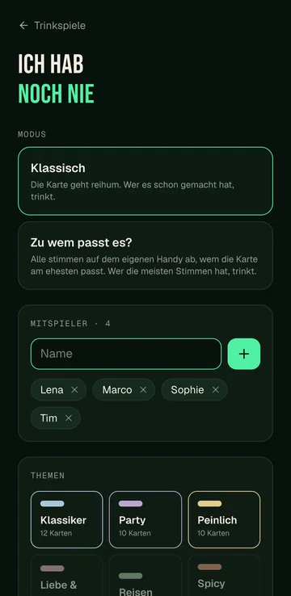
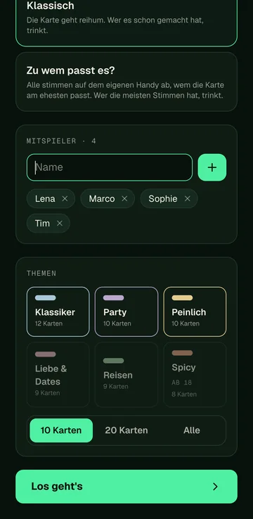
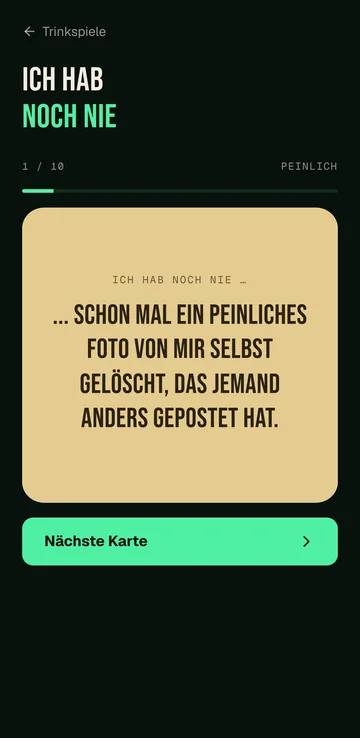
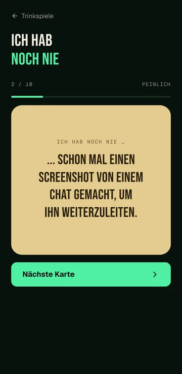

Klassisch
Die Karte geht reihum. Wer es schon gemacht hat, trinkt.
Trinkspiel · Fragen
Eine Frage wird vorgelesen. Wer es schon gemacht hat, trinkt. Oder die Runde stimmt ab, wem es am ehesten passt.

Die Karte geht reihum. Wer es schon gemacht hat, trinkt.
Alle stimmen auf dem eigenen Handy ab, wem die Karte am ehesten passt. Wer die meisten Stimmen bekommt, trinkt. Dafür braucht jede Person ein eigenes Handy, und ihr seid mindestens zu dritt.
Modus, Mitspieler, Themen und die Fragen auf grossen Karten.




Ihr wählt, worum es gehen soll.

Zwei Teams, ein Becherdreieck, Chlapf zählt live mit.

Teams, Tische, Resultate und Siegerehrung an einem Ort.

Karten raten, Pyramide, dann fährt jemand Bus.

Vier Asse laufen um den Sieg, ihr setzt Schlücke.

Challenges, Aufgaben, neue Regeln und Geheimaufträge.